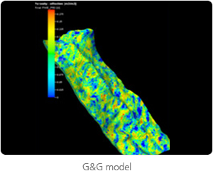
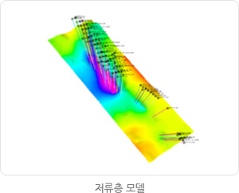
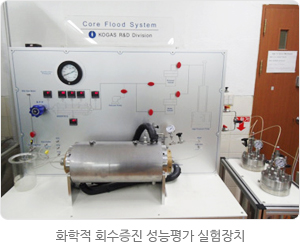
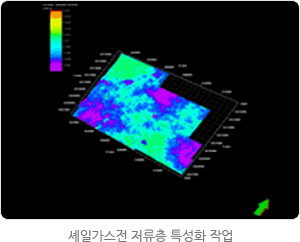
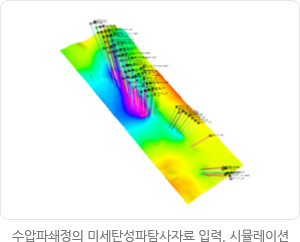
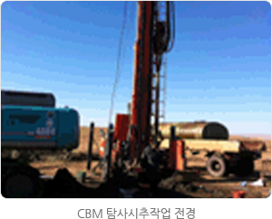
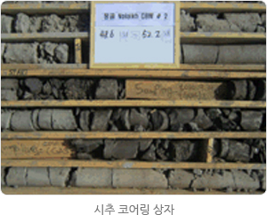
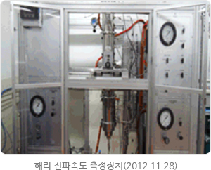
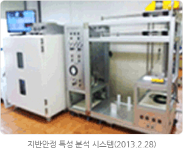
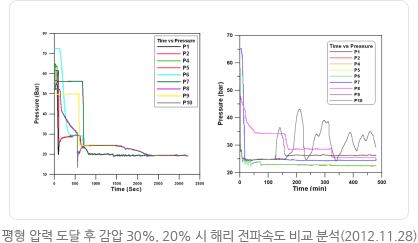

자원기술
전통 유, 가스전 생산성 평가 및 회수증진기술 개발
G&G structural model 구축
- 2D/3D 탄성파 해석, 탐사정 logging data. well top 정보 등을 통하여 geology and geophysical structural model을 도출함으로써 매장량 평가 및 석유생산의 기초자료를 생성
유정평가 및 property 모델링
- 평가정을 통해 취득된 기초자료를 분석함으로써, well별 저류층의 물성을 산출하고 저류층의 생산능력을 평가
생산성 분석
- 각 유정의 생산량 거동분석을 통해, 광구전체의 모델링 작업으로 확장


회수증진기술(2, 3차 회수)
- 수공법 및 화학적 회수증진 연구

이라크 쥬바이르 유전 생산성평가 프로젝트 : 공사가 운영사로 참여하고 있는 광구의 평가 등 기술지원
- 1차 평가 : ENI사 제공 광구자료 전체조사 (2010.6~ 2011.6)
- 2차 평가 : 광구자료 추가조사 및 KOGAS 독자 저류층 모델 수립(2011.7~2012.1)
- 쥬바이르유전 운영사 기술회의 참석 및 상호 생산성 분석결과 및 수공법 논의(2012. 1 ~)
비전통가스 기술개발
비전통가스는 일반적인 석유자원과 비교하여 유체유동능력이 떨어지는 대량부존 하고 있는 가스로서 셰일·치밀가스, CBM, 가스하이드레이트가 이에 속한다.
셰일·치밀가스 개발
셰일가스는 근원암내 잔류된 탄화수소와 유기물이 열분해 또는 박테리아에 의해 생분해되어 미세공극 내 유리 가스 또는 유기물이나 광물입자에 흡착 상태로 존재하는 메탄가스를 의미하며, 치밀가스는 공극 내에 가스를 함유하고 있는 저류암의 투과율이 0.1md 미만인 상태로 지하에 매장되어 있는 천연가스이다. 이 자원은 일반적 개발방법으로 개발이 불가능하여 수평시추, 수압파쇄 등의 특수한 방법이 적용되어야 합니다.
연구개발원 자원기술연구센터에서는 지식경제부의 에너지자원기술개발사업을 통하여 ‘셰일,치밀가스전 개발기술’연구를 진행하고 있으며(2011~2014), 생산성평가, 다단계수압파쇄, 수평시추기술등을 연구하고 있습니다.
연구개발원 자원기술연구센터에서는 지식경제부의 에너지자원기술개발사업을 통하여 ‘셰일,치밀가스전 개발기술’연구를 진행하고 있으며(2011~2014), 생산성평가, 다단계수압파쇄, 수평시추기술등을 연구하고 있습니다.


- 1단계 : 핵심원천기술 확보를 통한 독자적 사업성 평가, 개발/생산계획 수립(2011~2014)
- 2단계 : 개발기술 현장적용 및 핵심기술 고도화 등 설계기술 확보(2014~2016)
석탄층 메탄가스(CBM)
석탄의 근원인 식물이 지하에서 석탄화 과정 동안에 생성된 가스로 메탄(CH4)을 95%이상 함유하며, 석탄층이 CBM의 근원암(source rock)과 저류암(reservoir rock)의 역할을 하게 됩니다. 부존량이 많고 심도가 깊지 않아 비교적 개발하기 쉬운 자원으로 인식되고 있으며, 탄층 내의 수압을 낮추어 공극 표면에서 이탈된 가스를 생산하게 됩니다.
- 몽골 울란바타르 대기질 개선을 위한 인근 석탄층 메탄가스 개발(2009~2011)
- 1. 대상탄전 석탄층 평가 및 지질조사
- 2. 시추위치 선정, 탐사시추
- 3. 탄층 가스 분석
- 4. 지하수 생산 및 가스 생산성평가
  - 주요실적 및 향후계획
- 1. 몽골 CBM 개발사업 추진완료(2009~2011)
- 2. 석탄층 메탄가스 자원화 엔지니어링 핵심기술(증진/포집/정제) 개발(2010~)
- 3. 석탄층 메탄가스(CBM) 생산기술 최적화 및 현장 실증연구(2012~)
가스하이드레이트
가스하이드레이트는 천연가스주성분인 메탄분자(CH4), 에탄, 프로판 등이 저온 고압 하에 물(H2O)과 결합하여 형성된 드라이아이스 형태의 고체상 결정체입니다.
- 정부 주도 개발사업 1단계 (2005∼2007) : 유망지역 I 정밀조사 및 시추, GH 부존 확인
- 정부 주도 개발사업 2단계(2008∼2011) : 유망지역 Ⅱ 정밀조사 및 시추, 울릉분지 가스하이드레이트 부존량 재평가 및 생산기법연구
- 정부 주도 개발사업 3단계 (2012∼2016) : 시험생산 및 최적 상업적 생산 기반 도출



KOGAS 주요 연구실적 및 향후계획
- 1. 가스하이드레이트 회수 생산 최적 기법 분석 및 Bench scale 가스하이드레이트 해리 전파속도 특성 분석(2008∼2011)
- 2. 가스하이드레이트 부존층 환경영향 평가 및 동해안 울릉분지 시험 생산(2012∼)
- 3. 지반안정 특성분석을 위한 실험 및 결과 분석(2012~)